記事一覧
全142本
ラグビー34
-
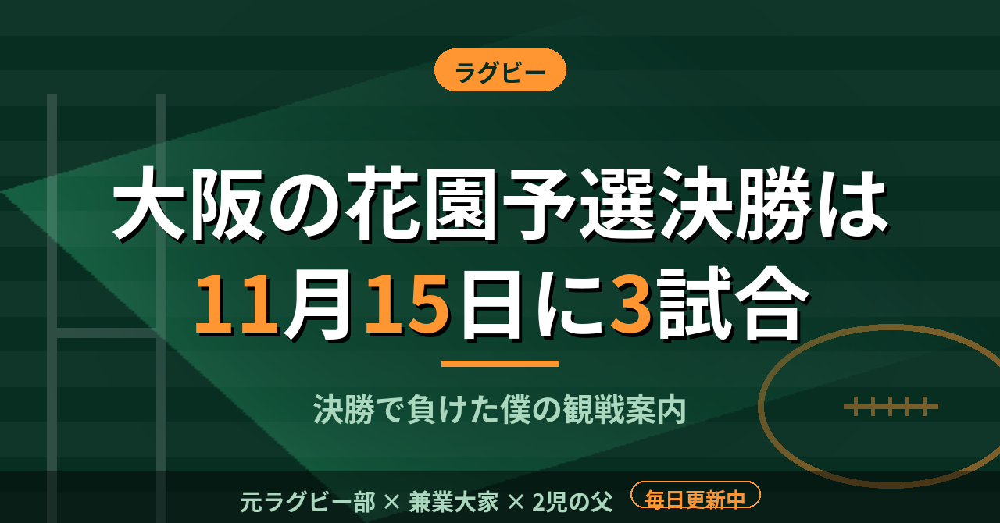
ラグビー大阪の花園予選決勝は11月15日、3試合が1日に並ぶ。決勝で負けた僕の観戦案内
11月に入ると、花園予選の結果が気になりはじめる。大阪の決勝は11月15日だ。高2で立った第一グラウンドで、今年も3つの決勝が行われる。…
-
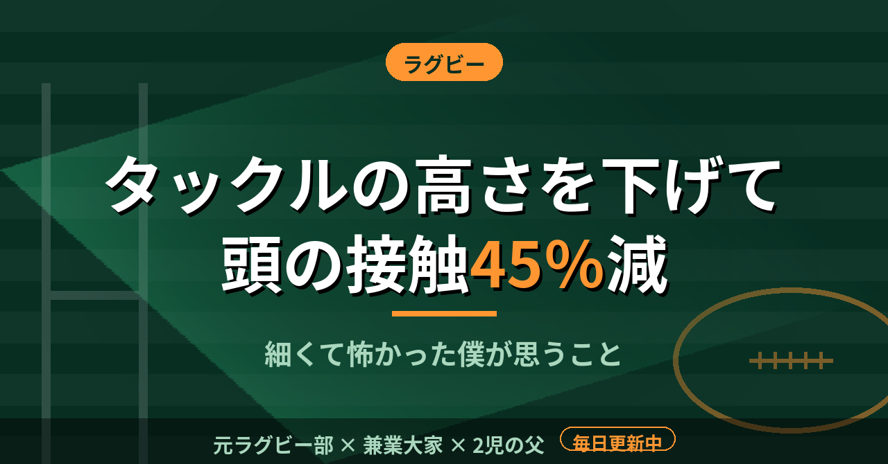
ラグビータックルの高さを下げると頭の接触が45％減った。細くてタックルが怖かった僕が思うこと
中学3年のころ、僕はタックルに入るのが怖かった。身長は170cm前後で体は細く、相手のほうが大きい。副キャプテンでありながらレギュラーを外れ、CTBでなんとか出場していた時期だ。…
-
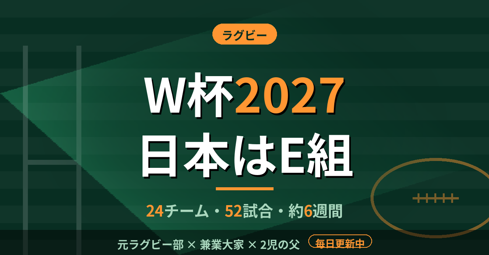
ラグビーラグビーW杯2027は24チーム・52試合。日本はフランス、米国、サモアと同じE組になった
来年の10月1日、オーストラリアのパースでラグビーワールドカップが開幕する。高校で花園予選の決勝に立った僕にとって、世界の舞台は遠い話だった。それでも組み合わせが決まってからは、試合日程を指で数えるようになった。…
-
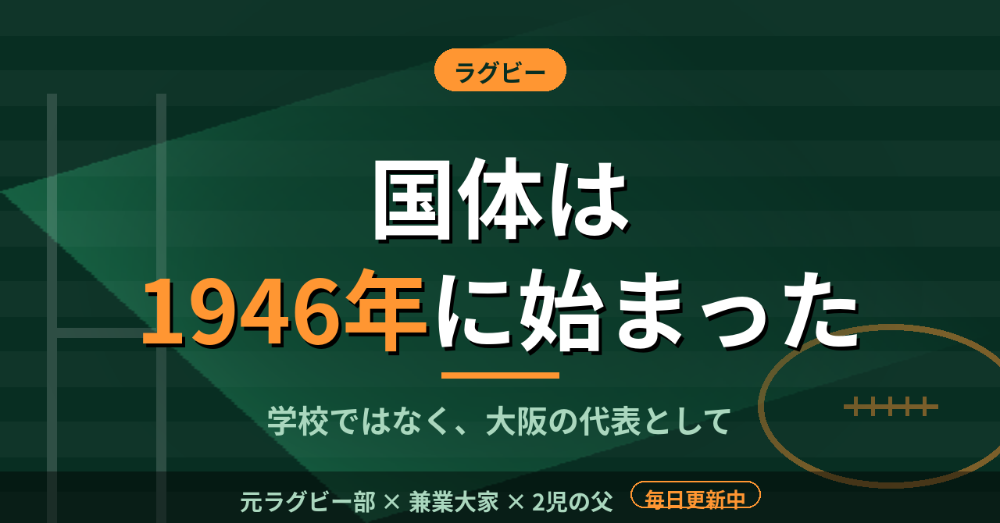
ラグビー国体は1946年、京阪神で始まった。ALL大阪で出た高校生の僕にとっての意味
高校ラグビーの目標といえば、まず花園だ。ただ高3の年、僕はもう一つの舞台に立った。ALL大阪として出た国体である。…
-
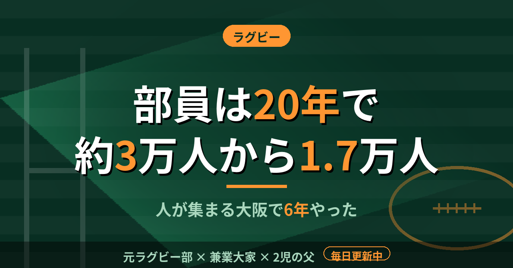
ラグビー高校ラグビーの部員は約3万人から1.7万人へ。人が集まる大阪で6年やった僕の景色
中学のラグビー部に入ったとき、経験者は僕だけだった。それでも練習に人が足りないということはなく、試合に出る15人を集める心配をした記憶もほとんどない。人が集まる環境にいたことを、当時は当たり前だと思っていた。…
-
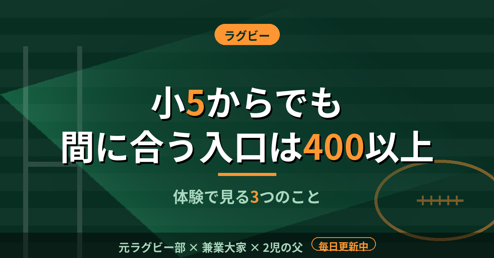
ラグビーラグビースクールは全国に400以上。小5で入った僕が、体験で見てほしい3つのこと
僕がラグビーを始めたのは小学5年生だった。最初からバックスで、右も左も分からないまま球を追っていた。いま2歳と0歳の父になって、「子どもにやらせるならどこに通わせるか」という目で、あの頃の環境を見直している。…
-
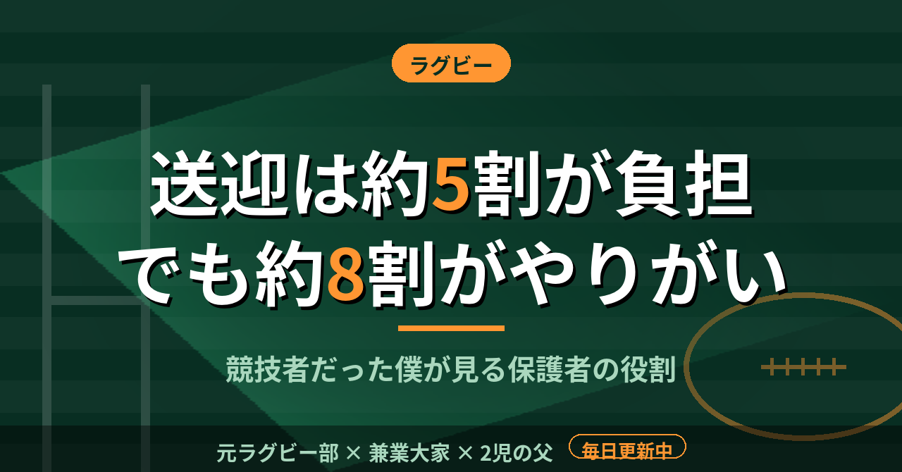
ラグビー送迎は約5割が負担、付き添いは約8割がやりがい。競技者だった僕が見る保護者のサポート
試合の日、グラウンドの端には保護者が並んでいる。選手として立っていた頃の僕は、その風景を当たり前のものとして見ていた。いまは2歳と0歳の父になり、あの場所に立つ側の事情が少し想像できるようになった。…
-
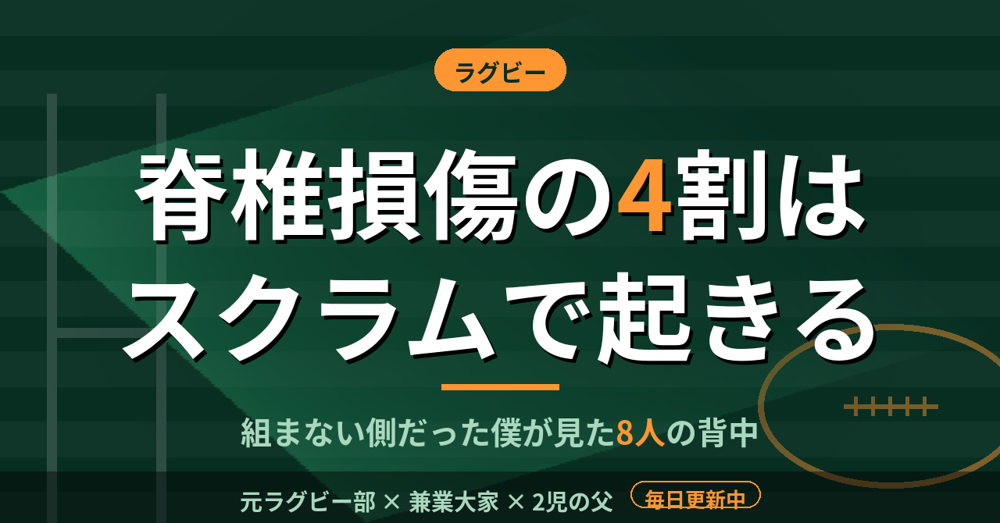
ラグビーラグビーの脊椎損傷の約4割はスクラムで起きる。組まないBKだった僕が見ていたもの
中学から大学まで、僕はずっとバックスだった。スクラムが組まれると、僕は8人の後ろに下がって、ボールが出てくるのを待つだけだった。一番近くにいながら、一度も中に入ったことがない。そんな立場から見たスクラムの話を書く。…
-
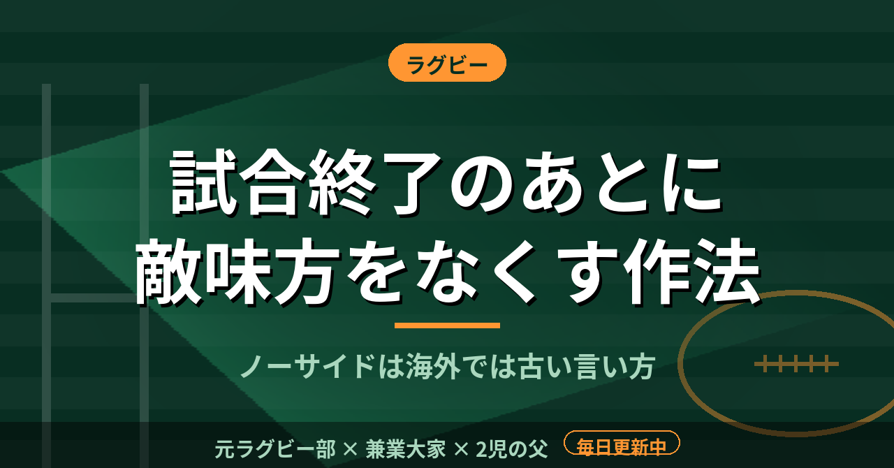
ラグビーノーサイドは海外では古い言い方で、試合終了は full time が普通。それでも僕はこの作法に救われた
花園予選決勝でPGを外した日のことは、細かいところまで今も覚えている。笛が鳴った瞬間の頭の中は真っ白だったが、ラグビーはそのあとに「敵味方の区別をなくす」時間を用意している競技だった。ノーサイドという言葉を、改めて調べて…
-
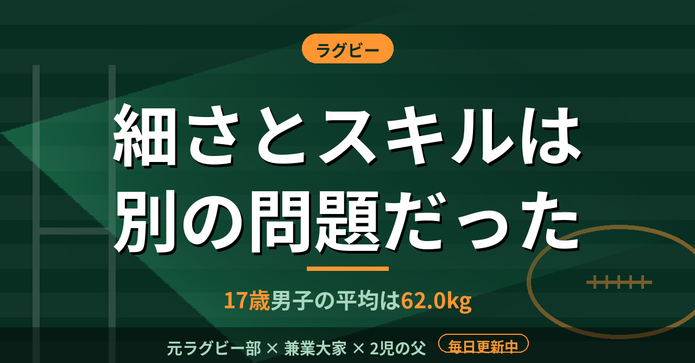
ラグビー17歳男子の平均は62.0kg。細さとスキル不足は、僕の中で別の問題だった
中3の春、副キャプテンになった年にレギュラーを外れた。理由を聞かれるたびに、僕は「細いから」と答えていた。だが今になって振り返ると、あの答えは二つの問題を一つにまとめていた気がする。…
-
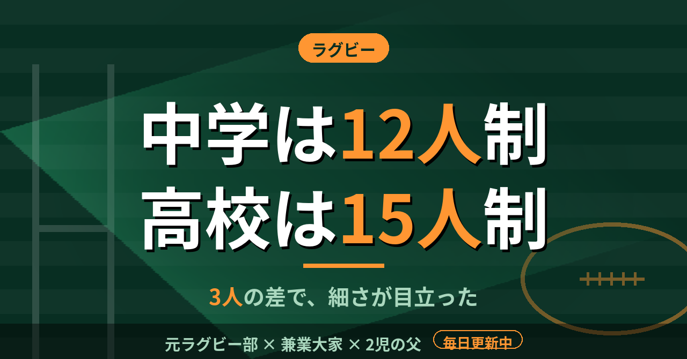
ラグビー中学生ラグビーは12人制が基本、高校から15人制。細かった僕は人数の差に立たされた
中3で副キャプテンになった年に、僕はレギュラーを外れた。CTBで何とか出場する形だった。その後、高校に上がるとき、競技そのものが変わったような感覚があった。後になって、人数の枠組みから違うことを調べて知った。…
-
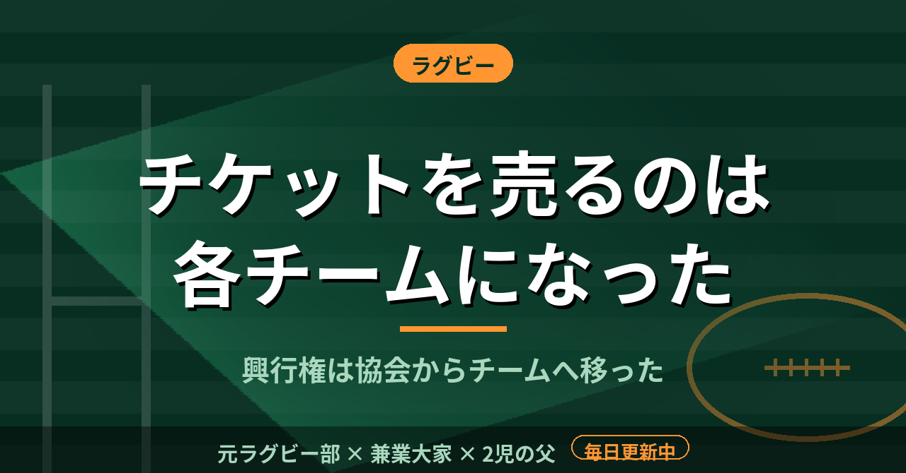
ラグビーリーグワンは24チームで開幕し、興行権は各チームへ移った。元選手の僕が見ている点
僕が現役だった頃、国内最高峰のリーグは企業名のついたチームが並ぶトップリーグだった。引退して10年が経ち、いまのリーグワンを眺めると、同じ競技なのにまったく別の仕組みで動いていると感じる。…
-
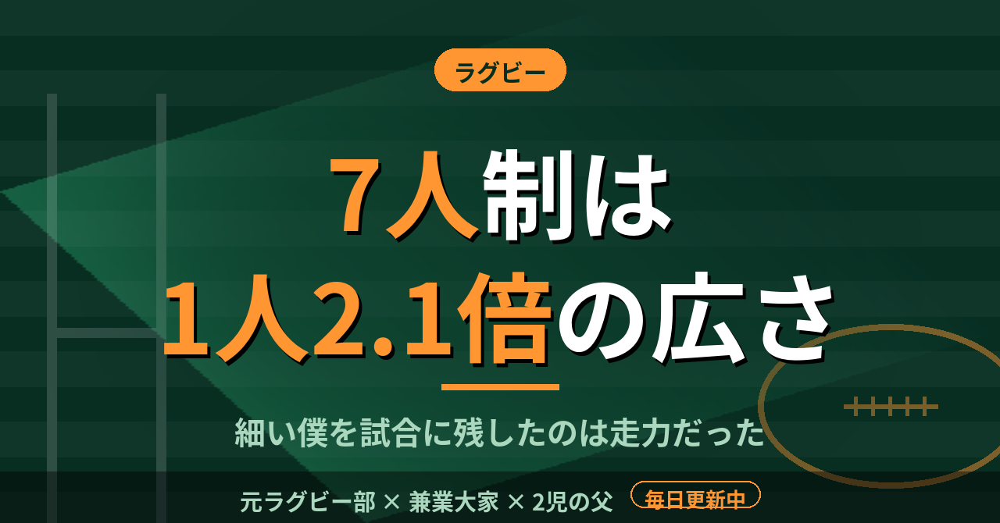
ラグビー7人制の1人あたりの広さは15人制の2.1倍。細かった僕は走力で残った
高校の頃、15人制では「細い」と言われ続けた。身長は178cmあっても、体重は60kg台だった。ところが7人制になると、同じ僕が通用した。理由は単純で、走れたからだ。…
-
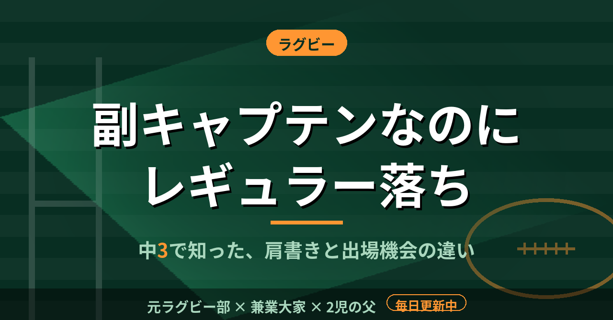
ラグビー12歳と13歳の平均身長差は7.1cm。中3、副キャプテンの僕はレギュラーを外れた
中3の春、僕は副キャプテンになった。同じ年に、SOのレギュラーから外れた。役職が付いた年に、試合で任される位置が変わるとは思っていなかった。…
-
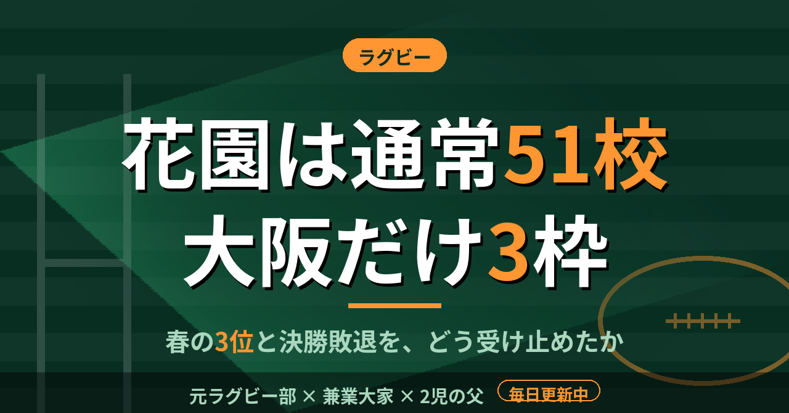
ラグビー花園は通常51校で、大阪だけ3枠。春の3位と決勝敗退を、僕はどう受け止めたか
高3の春季大会は、大阪3位だった。順位だけ見れば悪くない。ただ、その年の花園予選は決勝で負けて、花園には届かなかった。春の3位と、秋の決勝敗退。この二つを並べると、3位という順位の意味が少し違って見えてくる。…
-
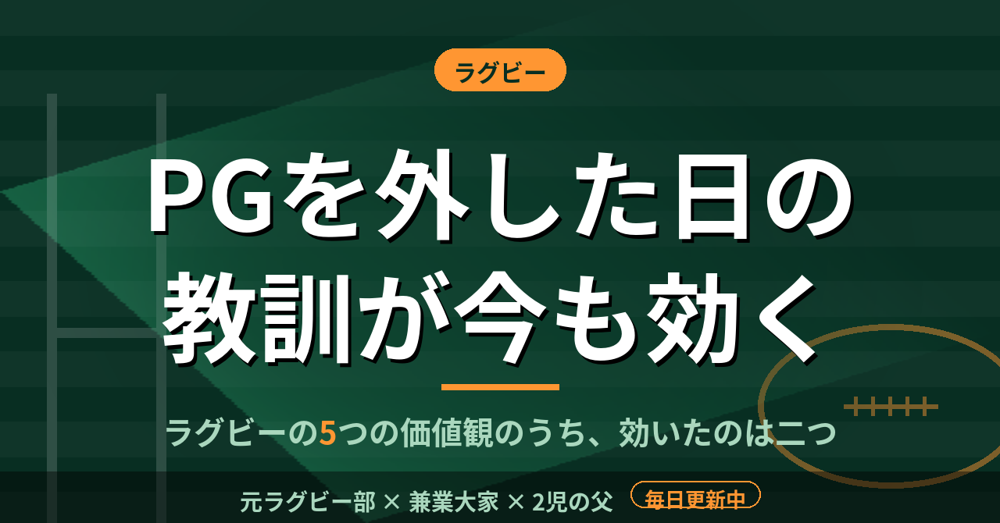
ラグビーラグビーのコアバリューは5つ。僕に一番効いたのは、PGを外した日の教訓だった
花園予選の決勝でPGを外した日のことを、今も細かく覚えている。ラグビーから人生に持ち込めたものは何かと聞かれると、僕はまずあの一本を思い出す。…
-
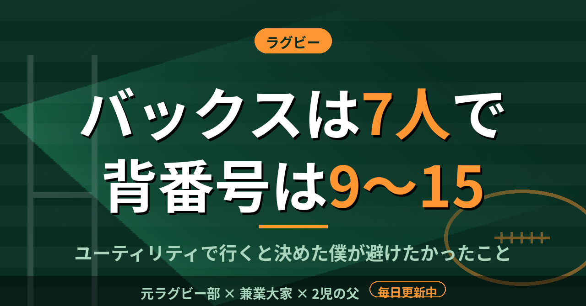
ラグビーバックスは7人で背番号は9〜15。ユーティリティで行くと決めた僕が避けたかったこと
高校のとき、ポジションを一つに固めるかどうかを決める場面があった。監督から話はあったが、いろいろやりたいという気持ちが勝って、固定しない道を自分で選んだ。今になって、あの選択は器用貧乏と紙一重だったと思う。…
-
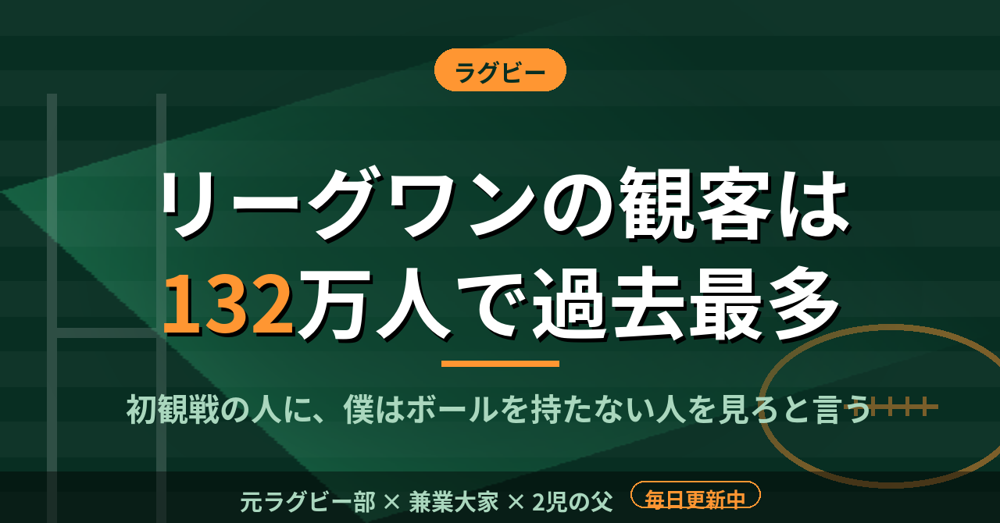
ラグビーリーグワンの観客は132万人で過去最多。初観戦の人に、僕はボールを持たない人を見ろと言う
ラグビーを見たことがない人から、どこを見ればいいのかと聞かれることがある。小5から大学までBKでプレーしてきた僕の答えは、いつも同じだ。ボールを持っていない人を見てほしい、と言う。…
-
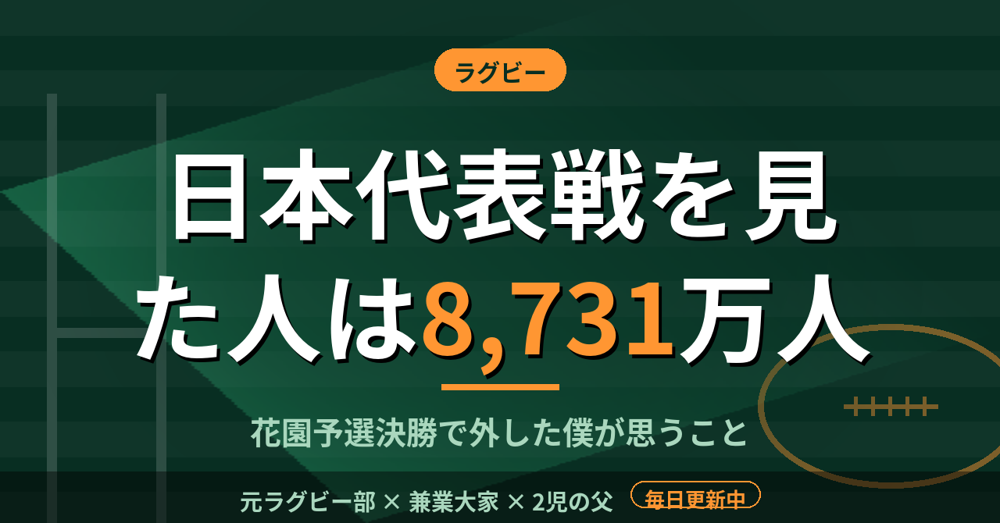
ラグビー日本代表戦を見た人は8,731万人。花園予選決勝で外した僕が思うこと
2019年のラグビーワールドカップ日本大会で、日本代表戦のいずれかを見た人は約8,731万人と推計されている。テレビ視聴率調査のデータをもとにした数字で、日本代表が出ていない決勝のイングランド対南アフリカでも、約4,18…
-
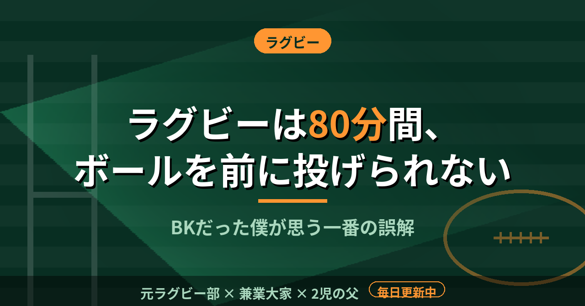
ラグビーラグビーは80分間、ボールを前に投げられない。BKだった僕が思う一番の誤解
小5でラグビーを始めたとき、ボールは前に投げられないと教わった。走りながら前の味方にパスできない競技は、他の球技に慣れた目には不思議に映る。あれから長い時間が経った今も、ラグビーで一番誤解されているのはこのルールだと思っ…
-
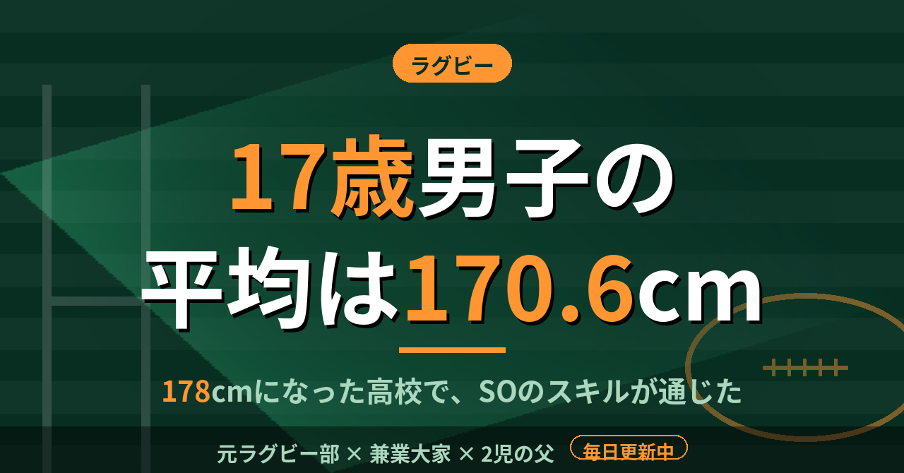
ラグビー17歳男子の平均は170.6cm。178cmになった高校で、SOのスキルが通じた
中学を出るまで、僕は自分のことを「器用だけれど細い選手」だと思っていた。高校でその評価が変わったが、理由は努力ではなく、身長だった。 ## スキルは中学のまま、体だけが変わった 中学の僕は身長170cm前後で、SOとして…
-
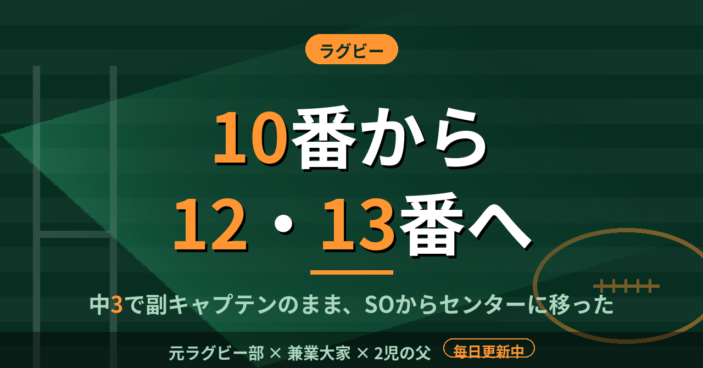
ラグビー10番から12・13番へ。中3で副キャプテンのまま、SOからセンターに移った
中学3年のとき、僕は副キャプテンだった。同じ年に、SOのレギュラーを外れている。チームをまとめる立場と、先発から落ちた選手という立場が、一つの年に重なった。…
-
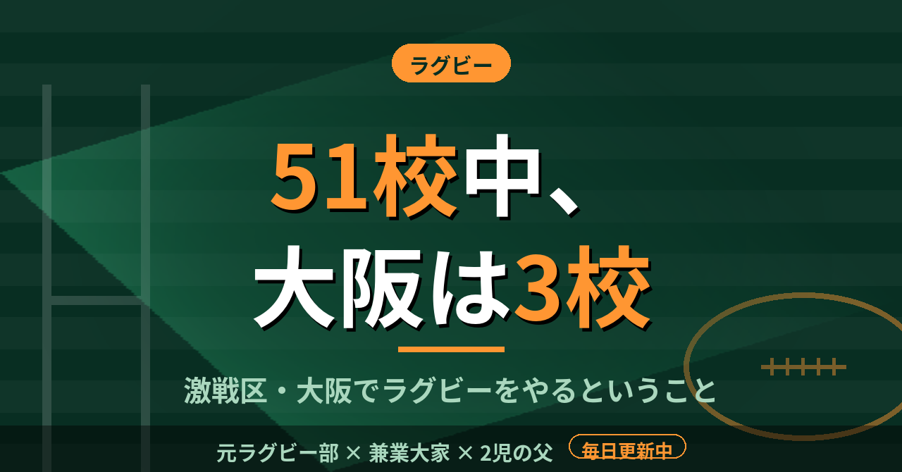
ラグビー47都道府県で51校のうち、大阪は3校。激戦区の大阪でラグビーをやるということ
高校の3年間で、花園予選の決勝には2度立った。高2と高3の秋である。それでも、全国に近い場所にいたという実感は、正直なところあまりない。大阪にいると、決勝に立つことと花園に行くことの間に、まだ距離があるように感じていた。…
-
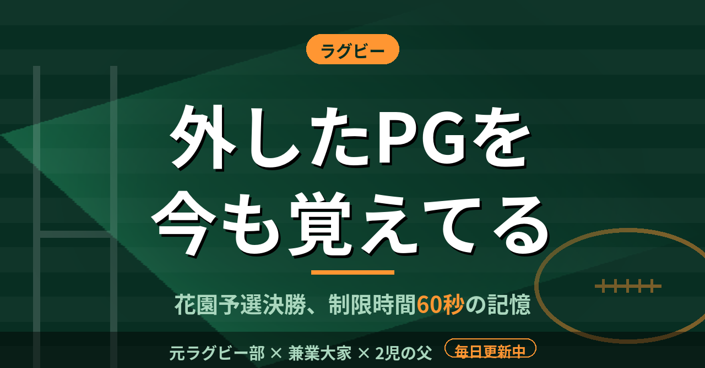
ラグビーPGは3点、制限時間は60秒。簡単なキックを外した花園予選決勝を今も覚えている
高3の花園予選決勝のことは、細かいところまで今も覚えている。負けた試合で、そこまで難しくないペナルティゴールを、僕が外した。…
-
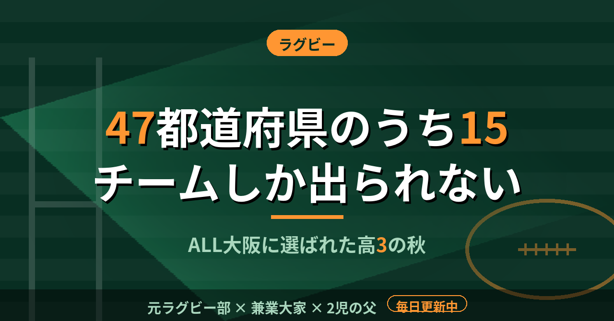
ラグビー47都道府県のうち15チームしか出られない。ALL大阪に選ばれた高3の秋
高3の秋、大阪府の選抜チーム——いわゆるALL大阪——のメンバーに自分の名前が入っていた。花園予選の決勝で負けてから数週間しか経っておらず、正直まだ気持ちの整理はついていなかった。…
-
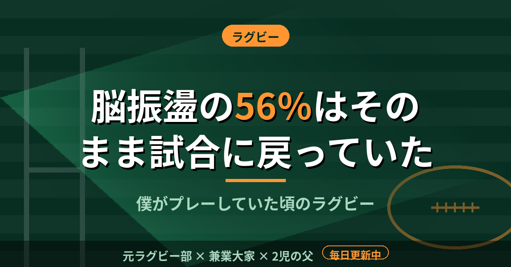
ラグビー脳振盪の56％はそのまま試合に戻っていた。僕がプレーしていた頃のラグビー
高校のとき、マウスガードをつけずにタックルに入って前歯を折った。今から思えば、あの頃は頭も同じような扱いだったと思う。守り方を誰も知らなかったのではなく、守るための基準が現場になかった。…
-
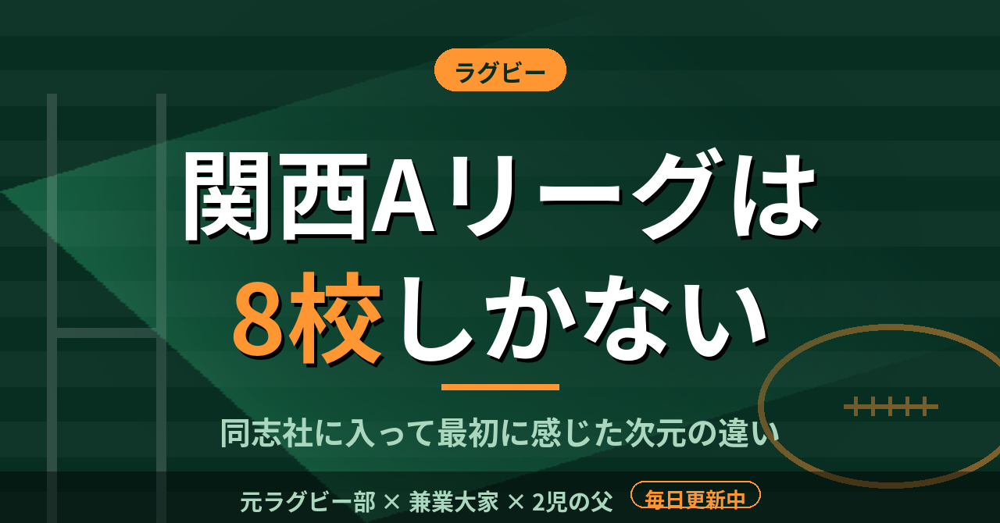
ラグビー関西Aリーグは8校しかない。同志社に入って最初に感じた次元の違い
高3の花園予選決勝で負けて、そこから数週間で進路を決めた。ラグビーを続けるか、あそこで終わりにするか。僕は続ける方を選んで、同志社大学に進んだ。…
-
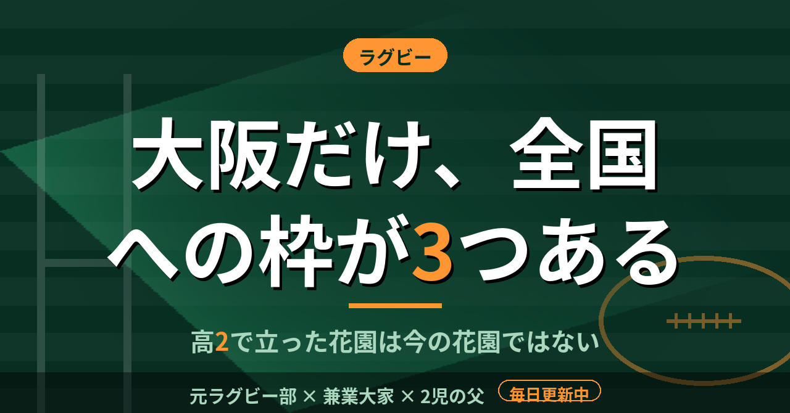
ラグビー大阪だけ、全国への枠が3つある。高2で立った花園は今の花園ではない
高2の秋、花園第一グラウンドの芝に出た瞬間、足の裏の感触が普段の練習場と違ったのを今でも覚えている。ラグビーをやっていた人間にとって、あの場所は特別だ。ただ、僕がそこに立っていたのは全国大会ではなく、大阪府予選の決勝だっ…
-
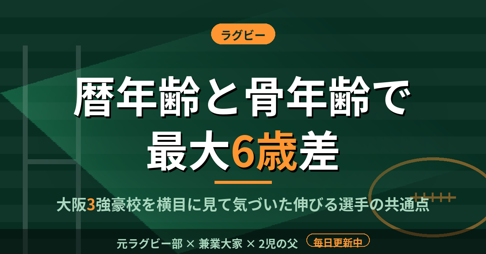
ラグビー暦年齢と骨年齢で最大6歳差。大阪3強豪校を横目に見て気づいた伸びる選手の共通点
中3のとき、僕はレギュラーを外れた。副キャプテンに選ばれた年だったのに、体の細さとスキルの伸び悩みでSOからCTBに回された。あのころは「自分には才能がない」としか思えなかった。それが高校に入って身長が伸び、パス・キック…
-
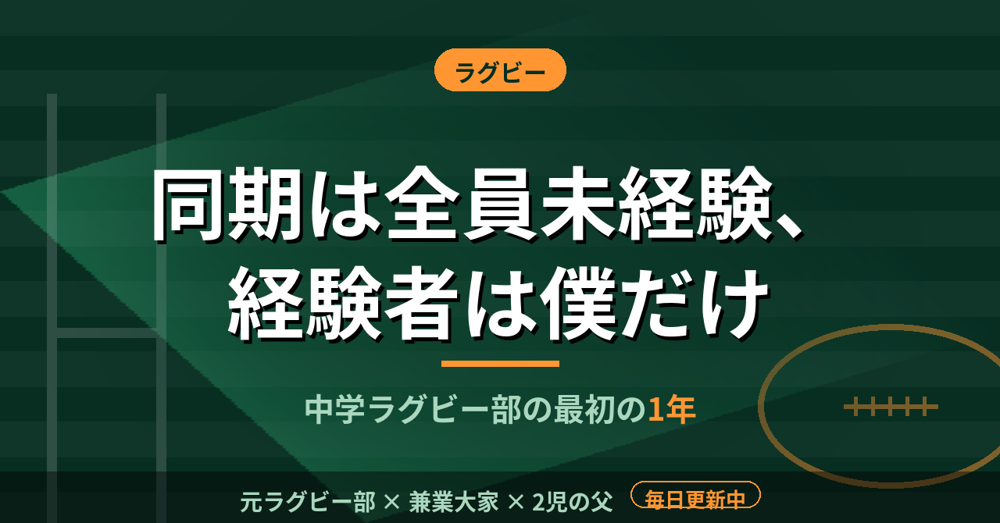
ラグビー同期は全員未経験、経験者は僕だけ。中学ラグビー部の最初の1年
中学受験をして入った中高一貫校のラグビー部に、経験者は僕しかいなかった。小5から2年間だけ地元でラグビーをやっていた僕と、中学に入って初めてボールに触る同期たち。志望動機の中心は「ラグビーができる環境に入ること」で、勉強…
-
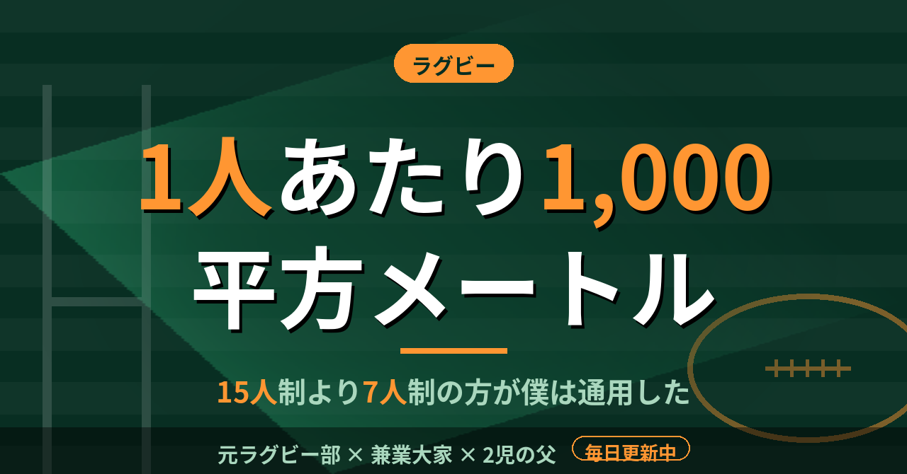
ラグビー1人あたり1,000平方メートル。15人制より7人制の方が僕は通用した
高3の年、大阪の7人制大会で優勝した。同じ年に花園予選の決勝で負けている。15人制では最後まで「細い」と言われ続けた人間が、7人制では違う評価をされた。…
-
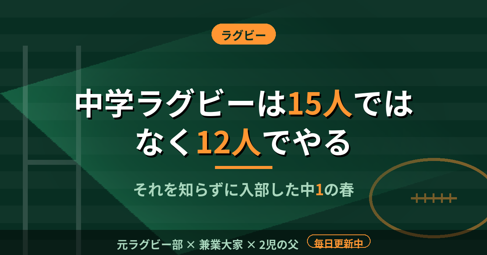
ラグビー中学ラグビーは15人ではなく12人でやる。それを知らずに入部した中1の春
中学1年の春、初めての部活の練習で、自分がその代で一番下手だと分かるのに10分もかからなかった。小学5年からラグビーをやってきて、そのために中学受験までしたのに、である。…
-
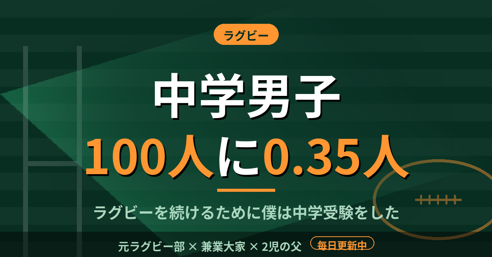
ラグビー中学男子100人に0.35人。ラグビーを続けるために僕は中学受験をした
小学6年の秋、僕は塾のテキストとラグビーの練習着を同じカバンに入れて持ち歩いていた。志望校を決めるとき、偏差値より先に頭にあったのは「その学校にラグビー部があるかどうか」だった。…
-
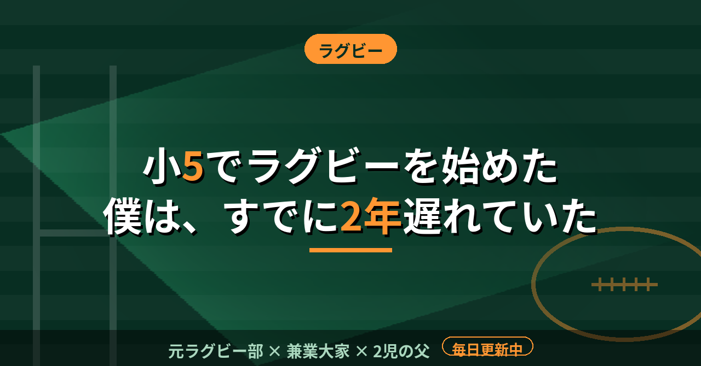
ラグビー小5でラグビーを始めた僕は、すでに2年遅れていた
小学5年生のとき、僕はラグビーを始めた。…
不動産・資産運用40
-
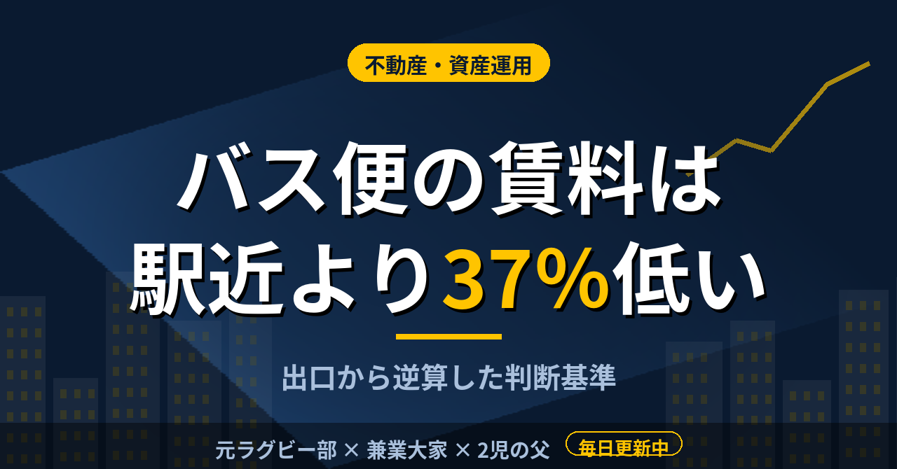
不動産・資産運用バス便の賃料は駅徒歩3分以内より約37％安い。僕がバス便の物件を避ける理由
物件を探していると、利回りの高い順に並べ替えたくなる。上に来るのは、たいてい駅から遠い物件だ。徒歩の距離を超えてバス便になると、数字はさらによく見えることがある。それでも僕がバス便を候補から外すのは、出口から逆算すると、…
-
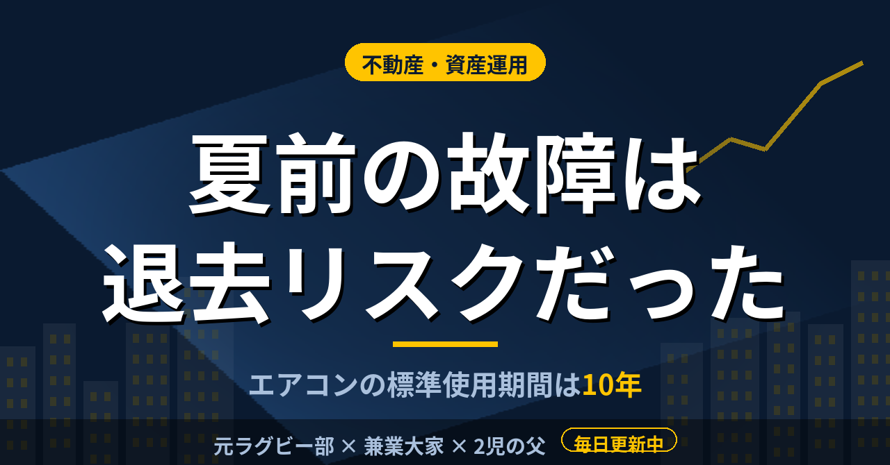
不動産・資産運用エアコンの設計上の標準使用期間は10年。夏前の故障を退去リスクとして数えた8.8万円
4月、入居者からエアコンが動かないと連絡が来た。1棟目を買って1か月ほどで、夏はまだ先だった。それでも僕は、その日のうちに動くことにした。…
-
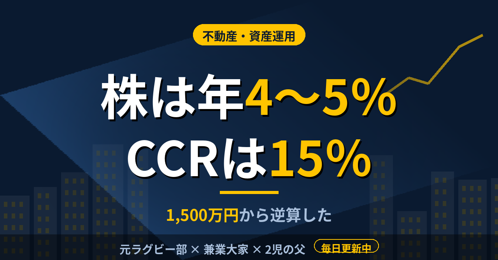
不動産・資産運用GPIFの国内株式の期待リターンは4.0〜7.5％。僕は4〜5％で不動産を選んだ
特定口座の株の評価額を眺めながら、このまま株で増やし続けるのかを考える時期があった。2棟目の検討を始めた今年のことだ。迷ったときは、感覚ではなく数字で比べるしかない。…
-
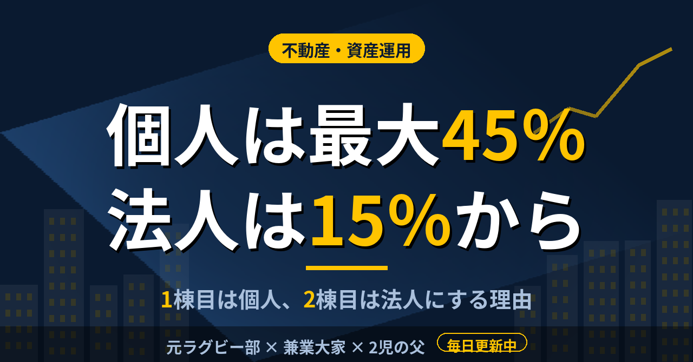
不動産・資産運用中小法人の法人税率は年800万円以下で15％。1棟目は個人、2棟目は法人にする理由
1棟目を買うとき、名義で迷うことはなかった。個人名義だ。ところが2棟目は、資産管理法人で買う前提で動いている。同じ人間が、なぜ名義を分けるのか。今回は税率の数字だけを並べて考えた。…
-
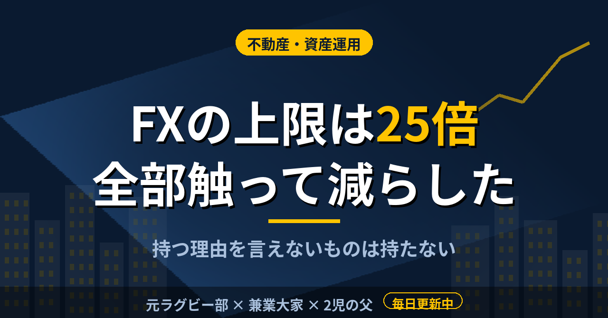
不動産・資産運用FXのレバレッジ上限は25倍。全部の商品を触った僕が、持つものを減らした理由
自分の運用履歴を数えたら、手を出した商品は米国株、投資信託、国債、金、コモディティ、仮想通貨、FX、REITの8種類あった。全部、自分のお金で一度は触っている。…
-
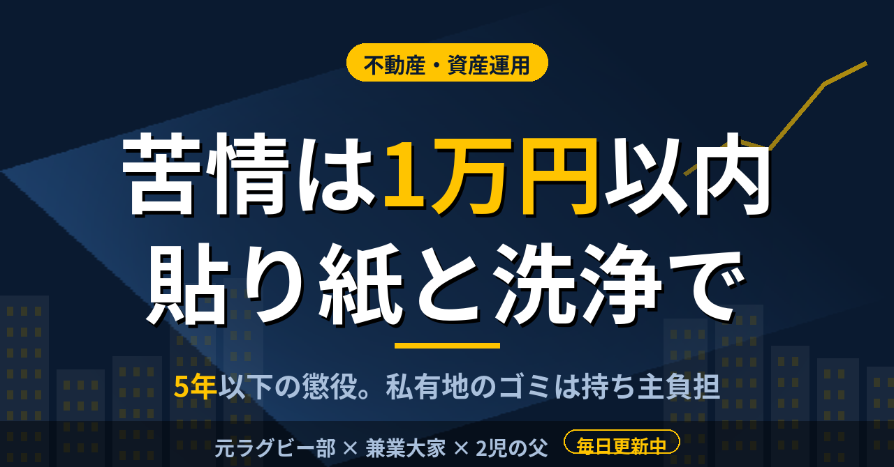
不動産・資産運用不法投棄の罰則は5年以下の懲役。ゴミ置き場の苦情を、貼り紙と洗浄で1万円以内に収めた
入居者からゴミ置き場が汚いと連絡が来たのは、1棟目を買って数か月がたった頃だった。大きな事故ではない。ただ、住人の全員が毎日通る場所への苦情は、放っておくと一番あとを引くと感じた。 ## 私有地のゴミは、所有者の負担にな…
-
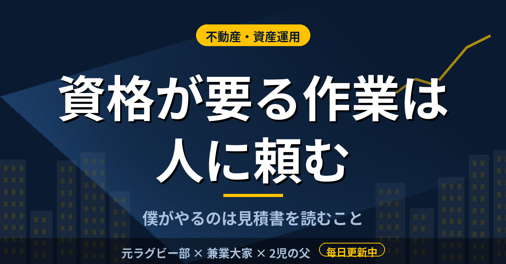
不動産・資産運用電気工事は資格がないと触れない。電気担当の僕が、賃貸の修繕で手を動かさない理由
引渡しから4か月、入居者からの連絡は何度か来た。ゴミ置き場、エアコン、トイレの水漏れ。電気の仕事をしている僕だが、自分で工具を持って現場に行ったことは一度もない。…
-
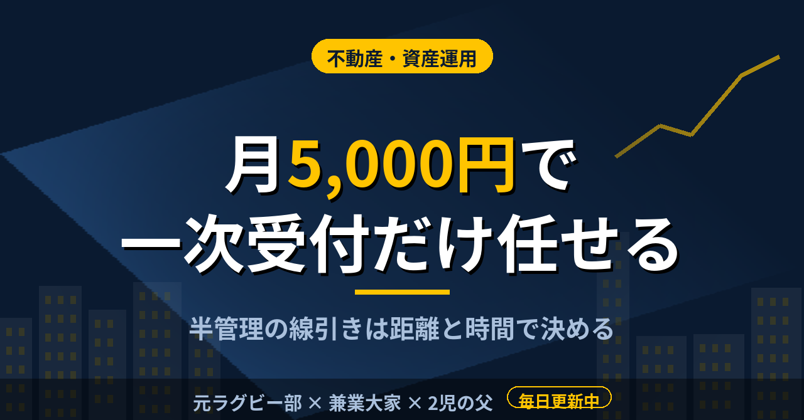
不動産・資産運用管理業務は法律上「維持保全と金銭管理」。月5,000円の僕は一次受付だけを任せている
入居者の電話が、直接僕のスマホに鳴ることはない。尼崎の木造9戸を買って半年ほど、連絡はまず管理会社に入り、その先の判断と手配を僕がやる形に落ち着いた。…
-
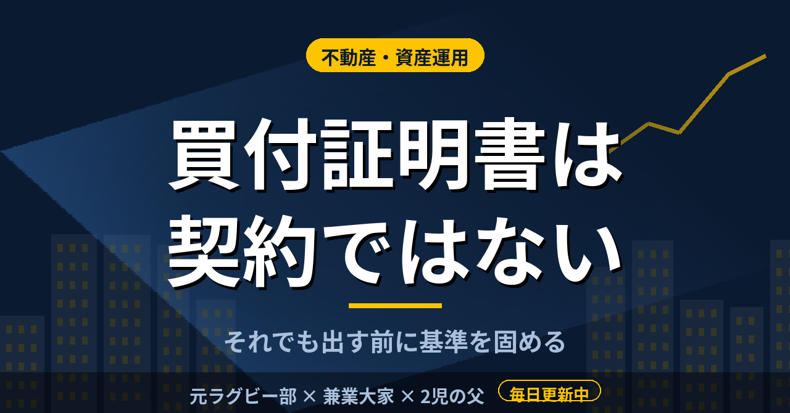
不動産・資産運用買付証明書に法的拘束力はない。それでも僕が提出の前に基準を固める理由
1棟目を買う前、一番手が止まったのは契約書でも手付金でもなかった。買付証明書というA4一枚の書類に、名前を書く直前だった。…
-
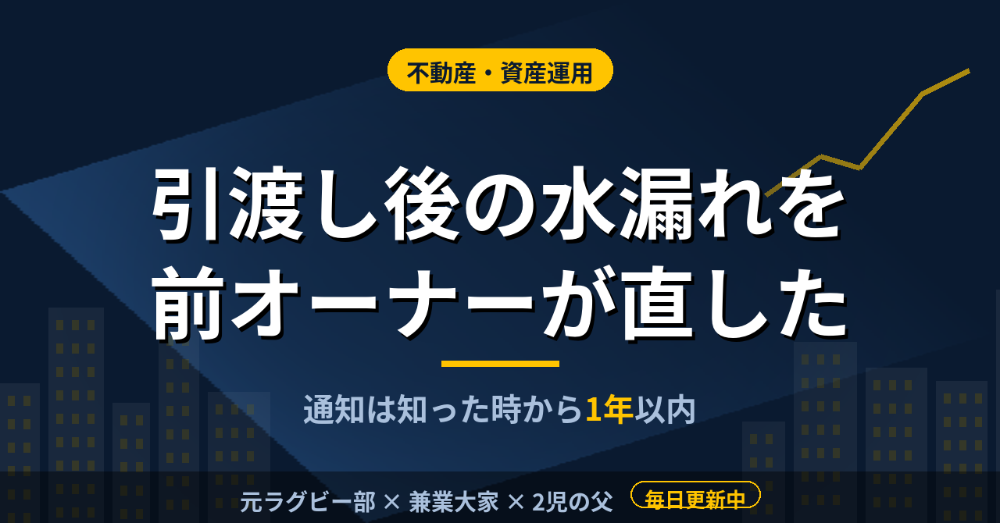
不動産・資産運用不適合の通知は知った時から1年以内。引渡し後の水漏れを前オーナーが直した分かれ目
1棟目の引渡しが終わってしばらくすると、コンロの修理と風呂場の水漏れが出てきた。この二つの費用を、僕は払っていない。前オーナーが対応してくれたからだ。引渡しの日を境に、すべてが買主の負担に切り替わるわけではない。…
-
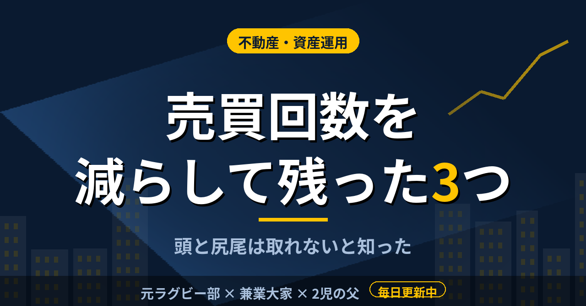
不動産・資産運用家計の売買回転率は年80％、平均は市場に1.8ポイント負けた。僕は頻繁に売買するのをやめた
投資を始めて5年ほどになる。独学で、YouTubeとネットを頼りに、米国株、投資信託、国債、金、コモディティ、仮想通貨、FX、REITと、ほぼ一通り手を出した。その過程でいちばん長く続けた癖が、頻繁に売買することだった。…
-
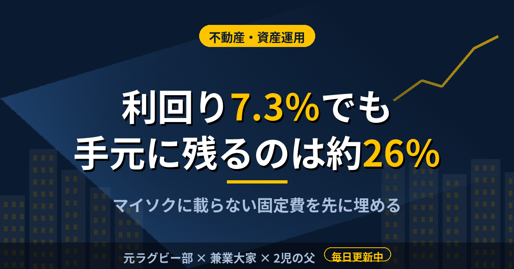
不動産・資産運用表面利回り7.3％、税引前CFは満室家賃の約26％。マイソクに載らない固定費の話
業者から届くマイソクには、利回りの数字が大きく書かれている。僕が1棟目で見たのは表面利回り7.3％だった。ただ、この数字が手元に残るお金を表していないことは、シミュレーションを組んで初めて実感した。…
-
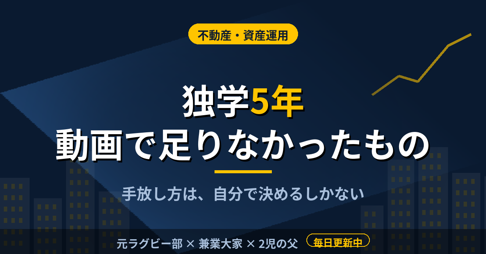
不動産・資産運用個人投資家の約29％がYouTubeを使う。独学5年の僕に動画で足りなかったもの
約5年前、コロナ前に投資を始めたとき、僕の教材はYouTubeとネットだけだった。証券会社のセミナーにも行かず、本を読み込むこともしなかった。独学のやり方としては、今でも珍しくないらしい。…
-
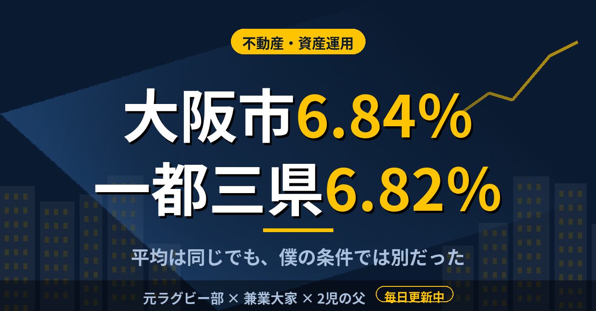
不動産・資産運用大阪市6.84％、一都三県6.82％。平均は同じなのに、地元の阪神間は土俵に乗らなかった
2棟目を探し始めたとき、最初に見たのは地元の阪神間と大阪だった。1棟目は尼崎で買っているし、土地勘もある。そこから探すのが自然だと思っていた。ところが条件を入れて眺めてみると、利回りで基準に届く物件がほとんど出てこなかっ…
-
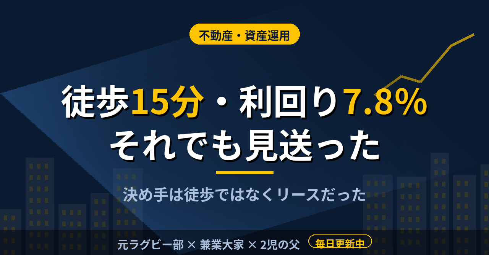
不動産・資産運用不動産広告の徒歩1分は80m。徒歩15分で利回り7.8％の物件を、僕は見送った
2棟目の提案メールに、利回り7.8％という数字があった。基準の7.0％を超えている。ただ、駅からの距離は徒歩15分だった。数字は合格で、立地は微妙。この物件を、僕は見送った。…
-
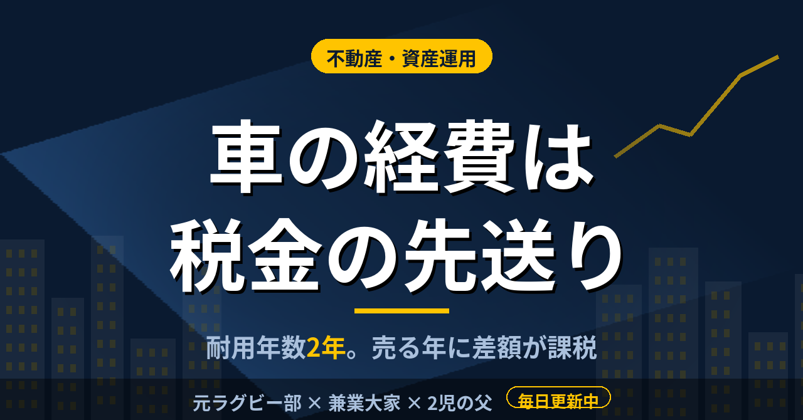
不動産・資産運用4年落ちの普通車は耐用年数2年。車の経費は、税金が消えず先送りになるだけだった
確定申告の準備で、自宅の家賃や光熱費と並べて、車も経費にできないか調べてみた。不動産の収入が増えれば、車の持ち方も変わるかもしれないと思ったからだ。調べて分かったのは、経費にして税金が消えるわけではない、ということだった…
-
不動産・資産運用
初婚年齢の平均は夫31.1歳。属性を上げて待った10年は、家族の時期と重なった
2016年に不動産投資の検討を始めたとき、僕の属性は弱く、提案されるのは価格の安い中古ワンルームばかりだった。インカムが取れない物件は信用できず、「属性を上げてから買う」と決めて待った。買えたのは2026年3月。その10…
-
不動産・資産運用
尼崎市の賃貸用住宅の空き家率は18.43％。半年間満室の僕は、まだ客付けを知らない
引渡しから半年あまりが過ぎたが、空室が出たことは一度もない。管理会社から退去の連絡を受けたこともない。賃貸経営でいちばん腕が問われると言われる客付けを、僕はまだ一度も経験していない。…
-
不動産・資産運用
20代の投資用マンション相談は405件。僕は10年買わず、属性を上げてから買うと決めた
不動産投資の検討を始めたのは2016年だった。買えたのは2026年3月。間に10年が挟まっている。…
-
不動産・資産運用
満室想定7.3％は、1戸空くと6.5％になる。9戸を持つ僕が見る現況利回り
マイソクの一番上に大きく書かれた利回りを、そのまま信じて物件を並べていた時期がある。数字が高いほど良い物件に見えるので、他の欄は後回しだった。…
-
不動産・資産運用
NISAの生涯上限は1,800万円。積立と国債は安全資産として動かさないと決めた
2棟目の自己資金を決めるとき、僕が最初にやったのは物件を探すことではなかった。手元のお金に「触っていい」と「触らない」の札を貼ることだった。…
-
不動産・資産運用
全部委託の管理手数料は家賃の3〜5％。半管理は物件が近いから成り立っただけだった
1棟目の管理は、半管理にしている。入居者からの一次受付は管理会社に任せ、対応と手配は僕がやる。管理費は月5,000円で収まっている。ただ、この形が成り立っているのは、物件が自宅から近いからだと考えている。…
-
不動産・資産運用
トルコリラは1週間で11.73％動いた。スワップ狙いの損は10万円程度で済んだ
投資で出した損失は、金額だけ見れば小さい。草コインも、トルコリラのスワップポイント狙いも、損失はどちらも10万円程度だった。いまは無理筋だったと思っているが、その負け方には意味があった。…
-
不動産・資産運用
定期清掃1回2万円が相場。僕はゴミ置き場の洗浄と伐採を1万円未満で頼んだ
入居者から「ゴミ置き場が汚い」と連絡が来たのは、1棟目を買って数か月のころだった。満室の物件なので、退去につながる前に手を打ちたかった。…
-
不動産・資産運用
引渡し後の不具合、前オーナー負担は2件で自腹は1件。トイレは作業費1万円だった
物件の引渡しが終わって、鍵と書類が手元に来たあとに、設備の不具合が3件出てきた。コンロの修理、風呂場の水漏れ、トイレの水漏れ。結果を先に書くと、前オーナーが対応したのが2件、僕が払ったのが1件だった。この差がどこで生まれ…
-
不動産・資産運用
LTV95％と90％の差は、1億円の物件で500万円。2棟目の自己資金1,500万円の枠に入るか
1棟目はフルローンで買えた。ところが2棟目の提案に並ぶ融資条件は、LTV95％か90％だった。数字だけ見れば5ポイントの差でしかない。この差が自己資金の何を動かすのか、実際に計算してみた。…
-
不動産・資産運用
S&P500の実質リターンは年6.8%。僕が不動産のCCR15%を基準に置いた理由
2棟目の物件資料を開くと、最初に電卓を叩く数字がある。表面利回りではない。CCRだ。この数字の線を15%に引いたのは、株式で年15%を出せる自信がなかったからだった。…
-
不動産・資産運用
不動産投資の利回り7.5％でも見送った、設備リース月5〜6万円の話
2016年から物件を探している。2026年3月に尼崎の木造3階建9戸を、1億700万円・表面7.3％で買った。2棟目も探していて、新築中心で利回りの実勢は6.5〜7.5％あたりだ。…
-
不動産・資産運用
「利回り7.3％」は高いのか低いのか。数字だけでは分からないと知るまで
引渡しの日、契約書に書かれた「表面利回り7.3％」という数字をもう一度見返した。安いのか高いのか、その場では判断がつかなかった。買うと決めてからも、この数字をどう評価すればいいのか、自分の中に基準がなかったことに気づいた…
-
不動産・資産運用
宅建業者は13万2,291。毎朝届く提案メールを10秒で閉じる3つの線
4月のある週、受信箱に不動産会社からの提案メールが40通近くたまっていた。1棟目を買ってから、この量は明らかに増えた。以前は自分から探しに行かないと情報が来なかったのに、いまは毎朝届く。…
-
不動産・資産運用
幅員4メートル、接道2メートル、1981年6月1日。マイソクを10秒で閉じるための数字
不動産会社から届く物件メールは、多い日で10通を超える。1棟目を買う前の僕は、それを1件ずつ丁寧に開いていた。マイソクを見て、利回りを電卓で叩いて、地図で周辺を歩いて、それで「やっぱりやめよう」と結論を出す。1件に30分…
-
不動産・資産運用
越境した枝は隣人が切れる。買う前の僕が一度も見ていなかった敷地の木
「敷地の木の枝が伸びて、落ち葉がうちの方に落ちてくる」。管理会社から一次受けの連絡が来たのは、引渡しから数か月後だった。入居者からではなく、近隣の方からのクレームだった。…
-
不動産・資産運用
エアコンが止まると賃料は10％減る。88,000円を相見積もりなしで払った4月
4月のはじめ、管理会社から電話が来た。エアコンが効かないという入居者からの申し出だった。尼崎の木造9戸、築10年の建物で、引渡しを受けてからまだ1か月も経っていない。1棟目を買ってから初めての、設備トラブルらしい設備トラ…
-
不動産・資産運用
米国株・投信・国債。一通り試して残ったのは3つだけだった
5年ほど前、コロナ前から株式投資を始めた。最初の数年でやったのは、米国株の個別銘柄、投資信託、国債、コモディティ、金、仮想通貨、FX、REIT。ネット記事とYouTubeで見つけたものを片っ端から触った。今振り返ると、あ…
-
不動産・資産運用
木造22年、鉄骨34年、RC47年。この3つの数字が僕の物件選びを最初に決めていた
1棟目を探していたとき、最初にやったのは利回りの比較ではなく、建物の構造を見分けることだった。木造なのか、鉄骨なのか、RCなのか。マイソクの一番上に書いてある数文字が、実はその後の融資判断のほぼすべてを決めていると知った…
-
不動産・資産運用
耐用年数22年、融資期間35年。この2つの数字を知らずに物件を探していた
2016年に不動産投資の検討を始めた頃、僕は「耐用年数」という言葉の意味をほとんど理解していなかった。物件資料に書かれた利回りと価格だけを見て、融資がどれくらいの期間で組めるかは業者の言う数字をそのまま信じていた。1棟目…
-
不動産・資産運用
管理費は月5,000円。相場3〜5％を払わない代わりに僕がやっていること
1棟目を買うまでに10年かけたのに、管理会社を決める時間は引渡しまでの数か月しかなかった。尼崎の管理会社を何社もまわって、最後に残った条件が月5,000円の定額だった。…
-
不動産・資産運用
10年待って1億700万円。2016年に僕が中古ワンルームを買わなかった理由
2016年、僕は不動産投資の本を読み漁っていた。実際に1棟目を買えたのは2026年3月だ。間が10年空いている。…
-
不動産・資産運用
駅徒歩2分は160メートル以内。1億700万円の判断で僕が一番重く見たもの
物件資料の見出しに「阪神本線 出屋敷駅 徒歩2分」とあった。数字だけ見て良さそうだと思ったが、それはこちらの感想でしかない。現地に行って、改札から玄関まで実際に歩いてみた。…
-
不動産・資産運用
表面利回り7.3%で1億700万円。正しいか確かめる物差しが僕にはなかった
2026年3月31日、決済の席で1億700万円の書類にサインした。その半年ほど前まで、僕は毎晩ポータルサイトを眺めては何も決められずにいた。買えなかったのは金がなかったからではない。自分の判断が正しいのかを確かめる方法を…
健康・トレーニング27
-
健康・トレーニング
歯科検診を受けた人は63.8％。前歯8本をセラミックにした僕が数えること
ラグビーでマウスガードをつけておらず、前歯が折れたことがある。折れた部分にはインプラントを入れている。4年前に前歯8本をすべてセラミックに替え、費用は20万円ちょっとだった。それ以来、痛みや欠けといったトラブルは起きてい…
-
健康・トレーニング
AGA薬の重大な副作用は肝機能障害。肝臓を悪くした僕が決めた距離の取り方
AGAの薬は、いまやスマートフォンで診察を受ければ自宅に届く時代になった。僕自身、AGA治療薬のフィナステリド（ジェネリック）を継続して服用している。手軽になったぶん、薬との距離を自分で決めておく必要があると感じている。…
-
健康・トレーニング
亜鉛の上限は成人男性で1日45mg。サプリを足し続けた僕が、減らして分かったこと
以前の僕の棚には、マルチビタミン、鉄、亜鉛、ビタミンB2のボトルが並んでいた。どれも「足りないよりはいい」という理由で買い足したものだ。…
-
健康・トレーニング
水道水の硬度は全国平均48.9mg/L。転勤で肌が気になった僕は、まず水を疑った
3年前、関東の工場から京都の研究所に移った。しばらくして鏡を見ると、肌がひどく汚く見えた。このまま年を取るのが怖いと思ったのが、美容を始めたきっかけだ。原因を探すとき、僕が最初に疑ったのは水だった。…
-
健康・トレーニング
肌老化の約8割は光老化といわれる。家族の肌がきれいで、僕の基準は上がった
肌診断で「年齢の割に状態は悪くない」と言われた。それでも満足できなかったのは、家にいる妻と子どもの肌が、それよりずっときれいだからだ。…
-
健康・トレーニング
サプリの健康被害は報告義務化へ。肝臓の数値を悪くした僕が、残したのは2つだけだった
マルチビタミン、鉄、亜鉛、ビタミンB2、男性ホルモン系。かつて僕は、これらを自分の判断で次々に足していた。いま毎日飲んでいるのは、リポソームのビタミンCとL-システインだけである。…
-
健康・トレーニング
美容医療の相談は2024年度に10,744件。水光注射を検討する僕が、契約の前に決めたこと
3年前に始めた美肌治療は、いまダーマペンに一本化している。1回9,000円以下に抑え、クリニックの肌診断では「年齢の割に状態は悪くない」と言われた。ただ、妻と子どもの肌を毎日見ていると、その基準にはまだ届いていないと感じ…
-
健康・トレーニング
中高生の推奨睡眠は8〜10時間。食事は数えた僕が、睡眠だけは数えなかった
高校の頃、僕は2Lのタッパーでご飯を食べ、1日に5〜6食とっていた。それでも体重は60kg台後半のままだった。食べた量なら今でも言える。ところが、何時間寝ていたかは思い出せない。…
-
健康・トレーニング
35〜39歳男子の週1運動は約5割。僕の筋トレは勝つ目的から落とさない目的へ変わった
現役のころ、トレーニングの目的はひとつだった。次の試合で、フィジカルで負けないこと。食事もメニューも、そこから逆算して組んでいた。いま同じような種目をやっていても、目的はまったく別のものになっている。…
-
健康・トレーニング
2023年7月、アートメイクは医行為と通知された。眉に通う僕が確認したこと
眉のアートメイクに通い始めて、3年ほどになる。ちょうど関東の工場から京都の研究所に移り、肌と見た目が気になりはじめた時期と重なる。大学までは見た目にまったく無関心だったが、社会人になって評価を上げたいと考えたのが入口だっ…
-
健康・トレーニング
男性のたんぱく質推奨量は1日65g。増量系プロテインから、僕はソイとEAAに変えた
現役のころ、プロテインを飲む目的は一つだった。体を大きくすることだ。引退して10年がたった今、同じ粉でも、選ぶものも飲む理由も変わっている。…
-
健康・トレーニング
医療費控除は10万円を超えた分から。見た目に使うお金を、僕は「投資」と呼ばない
4年前に前歯8本をセラミックにして、20万円ちょっと払った。3年前からは、肌のためにダーマペンにも通っている。体にお金を使うたびに、これは投資なのか、ただの消費なのかと考えてしまう。…
-
健康・トレーニング
運動は週60分以上、筋トレは週2〜3日。僕は静的な種目に、跳ぶ種目を足している
筋トレといえば、バーベルを持ち上げて、ゆっくり下ろす種目を思い浮かべる人が多いと思う。僕もラグビー部の頃はそうだった。ただ、パーソナルトレーニングを受けてから、メニューの中に必ず「跳ぶ」「押し出す」種目を入れるようになっ…
-
健康・トレーニング
筋トレの推奨は週2〜3日。トレーナーがついた大学で、僕は75kgになった
高校の3年間、僕は2Lのタッパーでご飯を食べ、1日5〜6食とっていた。それでも178cmで60kg台後半のまま、体重はほとんど動かなかった。…
-
健康・トレーニング
ビタミンCの推奨量は1日100mg。サプリは1g以上を勧めない。2種類を試す理由
サプリを減らしたとき、最後まで手放さなかったのがビタミンCとL-システインだった。その片方の、ビタミンCの飲み方を、いまあらためて考え直している。…
-
健康・トレーニング
男性のスキンケア実施率は45％。大学まで無関心だった僕は、評価を上げたくて始めた
大学を出るまで、自分の見た目にまったく気を使ってこなかった。ラグビー部は、顔よりも体重と走力で人を見る世界だったからだ。…
-
健康・トレーニング
30代男性の運動習慣は23.4％。筋トレの組み立ては、ラグビー部時代のまま
週に1回以上は体を動かす生活を、もう長く続けている。多いときは週3回になる。1,500mを5分前後で走れる状態を、いまも基準にしている。…
-
健康・トレーニング
1日5〜6食で太らなかった僕が、PFCを知って75kgまで増えた
高校の僕は、2Lのタッパーにご飯を詰めて1日5〜6食食べていた。それでも178cmで60kg台後半のままだった。量では足りない、と気づくまでに時間がかかった。…
-
健康・トレーニング
ALTの基準は30以下。サプリを減らしたら、肝臓の数値が正常に戻った
健康診断の結果を開いて、肝臓の項目に基準値を外れた印が付いていなかった。以前、サプリを盛りすぎて数値を悪くした経験がある僕にとって、結果表のなかでいちばん確認したかったのがこの欄だった。…
-
健康・トレーニング
皮脂は3倍、それでも乾いている。肌診断で「年齢の割に悪くない」と言われた次の段階
クリニックで肌診断を受けたら、「年齢の割に状態は悪くない」と言われた。通い始めた3年前は、自分の肌を数字で見たことすらなかった。ここまで来るのに何をやったかと、ここから先で止まっている理由を書いておく。…
-
健康・トレーニング
30代男性の運動習慣は23.5％。引退10年、僕は1500mを5分で走れている
ラグビーを引退してから10年が経った。今でも1500mを5分前後で走れる。狙って維持してきたというより、落ちていくのが嫌で週に1回以上ジムに行き続けた結果でしかない。…
-
健康・トレーニング
4種類試して残ったのは1回9,000円のダーマペンだけだった
3年前、関東の工場勤務から京都の研究所勤務に変わった。外に出る仕事が減り、蛍光灯の下で自分の顔を見る時間が増えた。そこで初めて「自分は肌が汚い」と思った。…
-
健康・トレーニング
1日5〜6食で60kg台のままだった。75kgに乗ったのは量を増やしたからではない
高校のとき、2Lのタッパーにご飯を詰めて学校に持っていっていた。1日5〜6食。それでも178cm・60kg台後半から体重はほとんど動かなかった。細いと言われ続けた3年間だった。…
-
健康・トレーニング
20代で約10％、40代で約30％。僕がAGAの薬を飲み始めるまでの数年
大学のラグビー部にいた頃、丸刈りにする機会が何度かあった。鏡で生え際を見るたび、嫌な予感だけが残った。気にはなっていたが、当時の僕は何もしていない。実際に動いたのは、社会人になってからだ。…
-
健康・トレーニング
マウスガードなしで前歯が折れた僕が、8本セラミックに20万円ちょっと払った話
高校のラグビーの練習試合中、コンタクトの瞬間に前歯に強い衝撃が走った。痛みよりも、何かが欠けた感触の方を先に覚えている。鏡を見たのは家に帰ってからで、前歯の先が斜めに欠けていた。あの日、僕はマウスガードをつけていなかった…
-
健康・トレーニング
薬物性肝障害の約9％はサプリだった。盛りすぎて数値を落とした僕の話
健康診断の結果で、肝機能の項目にだけ印がついていた年がある。酒はほとんど飲まない。生活で変えたことといえば、その頃に増えていたサプリの本数くらいしか思い当たらなかった。…
-
健康・トレーニング
2Lのタッパーで1日5食。それでも僕の体重は60kg台から動かなかった
高校の部室で、2リットルのタッパーに詰めたご飯を食べていた。朝、昼、練習前、練習後、夕食、寝る前。1日5食か6食。それでも僕は178cm・60kg台後半のまま、高校の3年間ほとんど動かなかった。「細い」と言われ続けた時期…
子育て・家族20
-
子育て・家族
こども誰でも通園は月10時間まで。自治体によっては3時間。2歳と0歳の父が数字で整理した
下の子が生後6か月を過ぎてから、子育ての制度を一覧で見直す機会が増えた。その中で名前に引っかかったのが、こども誰でも通園制度である。2026年4月から全国の自治体で本格実施になっている。2歳と0歳の父として、制度の中身を…
-
子育て・家族
子育て支援金は2026年4月分から。2歳と0歳の父が「払う側」で考えたこと
2歳と0歳を育てていると、子育ての制度は「もらう側」の目線で読みがちになる。ところが2026年4月分から、同じ制度に「払う側」の話が加わった。子ども・子育て支援金である。ニュースでは平均額が先に出るが、平均は自分の家の数…
-
子育て・家族
夫の家事・育児は1日1時間54分、妻は7時間28分。2歳と0歳の父が思うこと
家事と育児に、世の中の父親は1日どれくらいの時間をかけているのか。2歳と0歳の父になって、この平均が気になった。国の統計で確かめてみた。…
-
子育て・家族
夫婦の出会いは「学校で」が14.1％。高校から続いた相手と結婚して思うこと
妻との付き合いは高校時代から続いている。気がつけば、人生の長い時間を知っている相手になっていた。結婚する人たちは普通どこで出会って、どれくらい付き合ってから一緒になるのか。ふと気になって調べてみた。…
-
子育て・家族
言葉の目安は2歳で2語。上の子の成長を、僕は下の子ができて初めて数え始めた
上の子が初めて言葉を二つつなげた日を、僕ははっきり覚えていない。下の子が動き回るようになり、あの頃を思い出そうとして、思い出せないことに気づいた。…
-
子育て・家族
配偶者の収入を全部知る夫婦は35.2％。資産の話を妻にどう共有するか
2歳と0歳の子を育てながら、今年の春に1棟目の不動産を買った。買う前に一番考えたのは利回りではなく、妻にどこまで、どう話すかだった。…
-
子育て・家族
男性の育休取得率は30.1％から50.9％へ。取った僕が気にするのは、その後の時間
育休を取った側の人間として、取得率のニュースを見るたびに思うことがある。「取った」と「その後」は、別の話だということだ。…
-
子育て・家族
子の看護等休暇は年5日、2人で10日。通院のある子がいる僕は予定を先に置く
下の子には通院がある。病名や頻度はここには書かない。ただ、予定を組むときに通院の日を最初に置くようになった、という変化だけは記録しておきたい。…
-
子育て・家族
妻の育児時間は3時間54分、夫は1時間5分。月1〜3回のゴルフを僕はどう考えるか
練習が週2〜3回、ラウンドは多い月で3回。社会人になってから、ゴルフにはそれなりの時間を使ってきた。いまは2歳と0歳の子どもがいて、同じ頻度は続けられない。続けられないというより、数字を並べると、続けてはいけないと分かる…
-
子育て・家族
週1日以上の運動実施率は52.5％。2児の父の僕は、メニューを固定して週1回を守る
子どもが2歳と0歳になってから、トレーニングに使える時間は目に見えて減った。それでも、週に1回は体を動かすという線は崩していない。多い週は3回になる。…
-
子育て・家族
夫の育児時間は1日1時間5分。2人目で、1人目のかわいさを思い出した
下の子が笑った顔を見て、ふと気づいた。上の子が同じ月齢だったとき、きっと同じ顔をしていたはずなのに、僕はほとんど覚えていない。…
-
子育て・家族
未就学児の習い事率は64.2％。2歳の上の子は幼児教室とプールに通っている
2歳の上の子は、いま幼児教室とプールに通っている。習い事と呼ぶには早い気もしていたが、周りを見ると、そうでもないらしい。数字で確かめてみた。…
-
子育て・家族
パパの子育て。0歳が動き出した今、入院を要した転落は5年で102件だった
下の子（0歳）が動き出した。ずりばいで、気づくと数十センチ先にいる。ついこの前まで置いた場所にいてくれた子が、である。…
-
子育て・家族
2歳で300語、3歳で1,000語。上の子が3語文を話し始めて記録を残すことにした
ある日、上の子が単語を3つ並べて僕に話しかけてきた。少し前までは2つの単語をつなげるのがやっとだったのに、気づいたら文の形になっていた。毎日一緒にいるのに、変わった瞬間を見逃していたことに少し驚いた。…
-
子育て・家族
16年後と18年後に期限がある。子どもができて僕は「いつ売るか」を考えなくなった
2026年3月に1棟目のアパートを買ったとき、上の子は2歳、下の子は0歳だった。数字の見方そのものは10年前と変わっていない。変わったのは、その数字を何年の物差しで見ているかだった。…
-
子育て・家族
関西の中学受験率は10.9％。僕は勉強ではなくラグビーのために受験した
小6の秋、僕が親に頼んだのは「塾に行かせてくれ」ではなく「あの中学に行きたい」という一点だった。理由は成績でも将来の職業でもなく、ラグビー部があることだった。…
-
子育て・家族
小学校低学年のラグビーは5人制でタックルがない。子どもにやらせるか、僕の今の答え
2歳と0歳を育てている。ラグビーを20年やっていたという話をすると、ほぼ必ず「子どもにもやらせるんですか」と聞かれる。上の子はまだボールを転がして遊ぶ段階だが、この質問には毎回少し考え込む。…
-
子育て・家族
妻7時間28分、僕1時間54分。0歳と2歳の家事育児時間を数字で見た
2歳と0歳の子どもがいる。平日は6時起きで、寝るのは23時前後になった。自分の時間がどこに残っているのか、正直よく分からなくなっていた時期があった。…
-
子育て・家族
全部公立でも1人1,350万円。2歳と0歳の教育費を逆算して僕がやめたこと
2歳の子の保育園の書類を書きながら、この子に一番金がかかるのは何年後だろう、とふと考えた。0歳の下の子もいる。教育費の逆算を本気で始めたのは、1棟目の物件を買った直後だった。…
-
子育て・家族
2歳と0歳がいる年に1億700万円。一番慎重になるはずの時期に僕は買った
1棟目の引渡しは2026年3月末だった。そのとき上の子は2歳、下の子は0歳。夜中に下の子の泣き声で起きて、明け方に契約書の条項を読み直す、という数週間だった。…
ゴルフ7
-
ゴルフ
平均スコア90を切るゴルファーは18.3％。練習を週2〜3回に増やした僕が見た数字
社会人になってからゴルフを始め、練習を週2〜3回まで増やした時期がある。打席に立つ回数を増やせば、スコアはそのうち追いついてくる。当時の僕は、素直にそう思っていた。その前提を数字で確かめたことは、一度もなかった。…
-
ゴルフ
大阪府のゴルフ場利用税は350〜1,200円の7段階。発注側で回る僕が見た費用の線
社会人になってから、ゴルフは毎年月1回以上のペースで続けてきた。仕事柄、発注する側としてコースに出ることが多い。その日は、スコアより先に頭に置いておくことがある。費用の線をどこに引くかだ。…
-
ゴルフ
平成生まれのラウンド経験者は11.1％。同世代が一斉に始めたのは、僕の周りだった
社会人になってから、同期や学生時代の友人に「ゴルフ行かない？」と誘われる機会が増えた。気づけば同世代の多くが始めていて、それが当たり前の景色になっていた。ただ、数字を調べると、その景色は僕の周りだけのものだった。…
-
ゴルフ
男性のゴルフ実施率は14.8％。ラグビー経験者の僕に効いたのは、体より続け方だった
「ラグビーをやっていたなら、飛ばすんでしょう」。ゴルフ場で初対面の人にそう言われることがある。体を動かしてきたのは事実だが、その期待に応えられた記憶はあまりない。…
-
ゴルフ
ゴルファーの平均は年9.9回。僕は最低でも年12回、社会人になってから続けてきた
社会人になってから、ゴルフだけは毎年欠かさず続けてきた。最低でも月に1回、シーズン中は月2〜3回ラウンドに出る。練習場に週2〜3回通っていた時期もある。ラグビーを引退してから、いちばん長く続いている競技がこれだ。…
-
ゴルフ
ゴルフ人口が1年で9.4%減った年に、僕は発注側としてラウンドしていた
社会人になってからゴルフを本格的に始めた。取引先とのラウンドに呼ばれるようになったのがきっかけで、気づけば毎年最低でも月1回、シーズン中は月2〜3回コースに出るようになっていた。練習も週2〜3回やっていた時期がある。仕事…
-
ゴルフ
1ラウンド6時間、打っているのは数分。ラグビーとゴルフで使う頭はまるで違った
高3の花園予選決勝で、そこまで難しくないペナルティゴールを僕は外した。あれから10年以上たって社会人になり、ゴルフを始めた。1メートルのパットの前に立ったとき、あの日とまったく同じ体の硬さが戻ってきた。…
仕事・キャリア14
-
仕事・キャリア
電験三種の合格率は12.8％。設備の電気担当として、この試験を横から見ている
設備の電気担当として働いていると、電気主任技術者という資格が現場でどれだけ頼りにされているかを感じる。その入口にあたる試験が、いまどんな数字になっているのか気になった。…
-
仕事・キャリア
3歳未満の子のテレワークは努力義務に。2歳と0歳の父が在宅を辞めない理由に数える
在宅の日は、朝に洗濯機を回して、そのまま仕事のパソコンを開く。2歳と0歳を育てる今の生活は、在宅勤務ができなければ成り立たないと思っている。…
-
仕事・キャリア
パワハラを受けた人の14.9％は辞めた。仕事が重くない部署から人が抜ける構造
僕の部署は、業務量そのものは多くない。それでも後輩の大半が辞めたり、異動でいなくなったりした。忙しさが原因でないなら、何が人を押し出しているのか。公的な調査の数字と、自分の体感を並べて整理してみる。…
-
仕事・キャリア
転職者は年330万人、転職希望者は1,023万人。辞める気のない僕が面接に進んでみた
辞めるつもりはない。在宅ができて、業務量も多くなく、家族のことを考える余裕もある。それでも僕は転職活動をしてみた。会社の外で自分の経験がどう見えるのかを知らないまま、会社都合のリスクだけを抱えている状態が嫌だったからだ。…
-
仕事・キャリア
テレワーク実施率は16.8％。関東の工場から関西へ移り、僕の働き方は変わった
関東の工場にいた頃、仕事は現場に出なければ始まらなかった。いまは京都の研究所で、在宅で進められる日がある。同じ設備の電気担当でも、働く感覚はまるで違う。数字を調べながら、その違いを整理してみた。…
-
仕事・キャリア
大卒の3年以内離職率は33.8％。後輩育成が好きだった僕は、見送る側に立ち続けた
関東の工場にいた頃、僕は新人の面倒を見るのが好きだった。教えたことが翌月にはできるようになっていると、こちらも仕事の手応えを得られる。関西に移ってからも、新人がたくさん入ってきた時期は同じように楽しんでいた。…
-
仕事・キャリア
35〜44歳男性の転職率は3.8％。辞める気はないまま、僕は転職活動をした
転職サイトに登録して数日後、最初の技術面談の案内が届いた。辞めるつもりは、そのときもなかった。それでも僕は、面談に出ることにした。…
-
仕事・キャリア
見積期間は500万円未満なら1日以上。本業の発注作法を、僕は1万円の工事に持ち込んだ
ゴミ置き場が汚いという入居者の声が管理会社から届いたとき、最初に考えたのは誰に頼むかではなく、何社に聞くかだった。本業は化学メーカーの設備部門で、電気を担当している。工事を頼む側に立つのも仕事のうちで、その作法が賃貸の修…
-
仕事・キャリア
男性の育休取得率は50.9％。復帰した僕は、見る側から見られる側になった
育休が明けて席に戻った日、同じ職場なのに見える景色が違っていた。部屋も人も変わっていない。変わったのは、僕の立ち位置だった。…
-
仕事・キャリア
35〜44歳の転職者は18万人から24万人へ。電気系設備の経験で技術面談まで進んだ
35歳を過ぎたら転職は厳しい。長いあいだ、そう思い込んでいた。動いてみたら、その前提が少し違っていた。…
-
仕事・キャリア
早期退職の募集は46社・2万人超。辞めない僕が転職の選択肢を持つ理由
僕は化学メーカーで設備の電気を担当する会社員で、大家も兼業している。今の働き方に大きな不満はない。業務量は多くなく、在宅もできるので、家族のことを考える時間も取れている。辞めるつもりはない。…
-
仕事・キャリア
転職者比率が最も高いのは15〜24歳。35歳の壁を確かめに面談を受けに行った
転職サイトに登録したのは、辞めると決めたからではない。会社都合の退職や早期退職という枠が目の前に来たときに、何も知らないまま座っているのが怖かったからだ。ただ、登録する前の僕は「35歳を過ぎたら選ぶ側ではなくなる」と本気…
-
仕事・キャリア
国内転勤の単身赴任率28.6%。僕は家族ごと京都へ移った
辞令を受け取ったのは3年前の春だった。関東の工場から京都の研究所へ。異動先も職種の中身も、僕が選んだわけではない。設備の電気担当として入社してから初めての大きな異動で、正直なところ最初の数日は実感が湧かなかった。荷物をま…
-
仕事・キャリア
「電気担当」の中身は法律で決まっていた。9割が50代以上という現場の話
同志社大学の電気系・電子工学科を出て、僕が入ったのは化学メーカーの設備部門だった。配属先の肩書きは「電気担当」とだけで、内定をもらった時点では実際に何をする仕事なのか自分でも説明できていなかった。周りに同じ職種の友人もい…